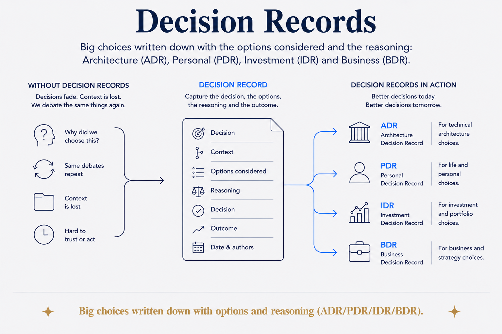

Big choices written down with options and reasoning (ADR/PDR/IDR/BDR).

Big choices written down with the options considered and the reasoning: Architecture (ADR), Personal (PDR), Investment (IDR) and Business (BDR) decision records.
The thing worth capturing isn't the decision — it's the reasoning. What you chose is usually visible in the outcome; why you chose it, and what you rejected, evaporates within weeks. So you re-litigate settled questions, or worse, quietly reverse a good decision because nobody remembers the constraint that drove it.
A decision record fixes that cheaply: the options on the table, the reasoning, the choice, the date. Six months later the question "why on earth did we do it this way?" has an answer, and the answer is often "because of a constraint that no longer applies" — which is exactly when a decision should be revisited.
They compound with AI, too: a model reading your decision records inherits your reasoning, not just your conclusions.